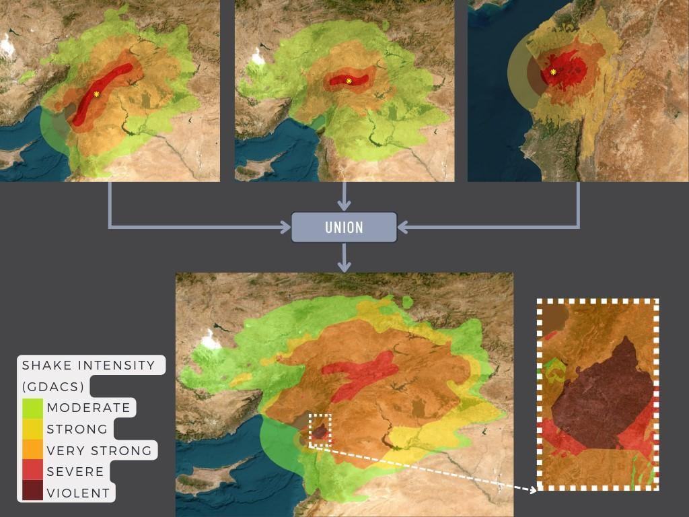
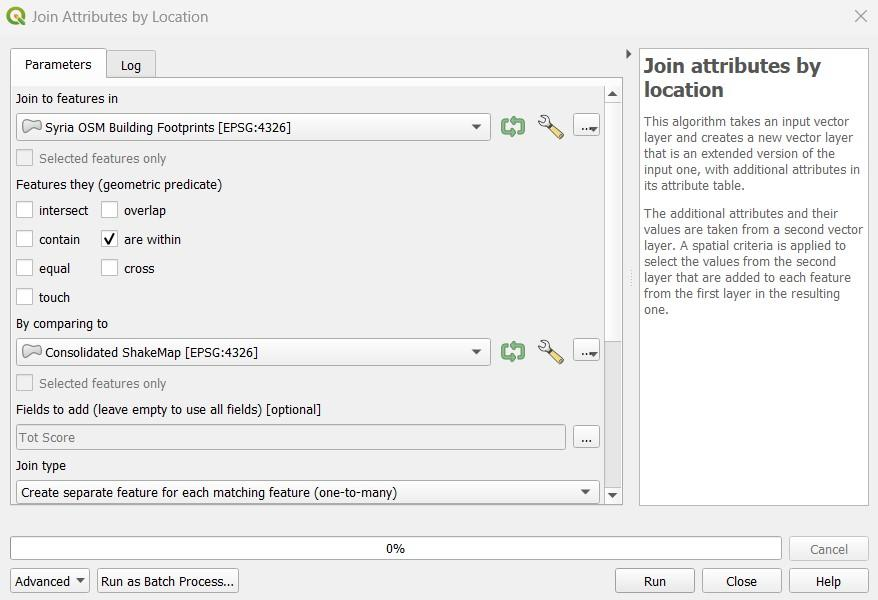
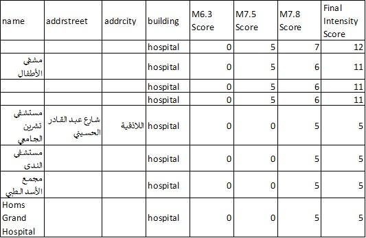

8.2. Évaluation des dommages subis par les bâtiments après le tremblement de terre à l'aide d'OpenStreetMap (OSM)
Objectifs du cours
Cette section fournit :
- Un aperçu de la pertinence de l’utilisation des données OSM pour l’évaluation des dommages après un tremblement de terre.
- Une plongée approfondie dans les modèles de données et l’acquisition d’ensembles de données.
- Des instructions étape par étape pour créer des évaluations des dommages en utilisant les données OSM sur le SIG
Activités d’apprentissage
Aperçu général
Après une catastrophe naturelle, il est essentiel de procéder à une évaluation des dommages subis par les bâtiments afin d’éviter de nouvelles victimes et d’identifier des lieux sûrs pour des abris temporaires. L’évaluation peut contribuer aux efforts de réponse et de récupération en donnant la priorité aux zones les plus endommagées et en fournissant des données pour évaluer les dégâts matériels et estimer les coûts de réparation. Ce document fournit un guide étape par étape pour l’utilisation des données OpenStreetMap dans l’évaluation des dommages aux bâtiments après un tremblement de terre, qui peut être personnalisé en fonction des ensembles de données disponibles et du niveau d’évaluation nécessaire.
Données OpenStreetMap sur les bâtiments
La première des choses à considérer est la disponibilité d’ensembles de données accessibles au public et téléchargeables est une condition préalable à la réalisation d’une telle évaluation. La section “Données d’entrée” du présent document contient un grand nombre de référentiels de données utiles pour l’évaluation des dommages causés aux bâtiments après un tremblement de terre. L’un d’entre eux est la base de données OpenStreetMap, une plateforme cartographique gratuite et libre qui fournit des empreintes de bâtiments avec des informations précieuses telles que la hauteur, le matériau et la capacité. Elle est alimentée par les contributeurs OSM du monde entier, qui sont pour la plupart des bénévoles qui cartographient les caractéristiques géospatiales et ajoutent des informations critiques basées sur les connaissances locales.
La figure 1 montre un dispensaire aux Philippines qui a été cartographié dans OSM par le projet PhilAWARE. Le projet PhilAWARE, comme beaucoup d’autres projets de cartographie basés sur OSM, a créé son propre modèle de données 1, qui est une collection de balises OSM décrivant au mieux les attributs d’une caractéristique significative pour le projet. Le projet PhilAWARE ayant été conçu pour fournir des données situationnelles aux bureaux locaux de DRRM, des balises telles que backup_generator=no, building_material=concrete, et capacity_persons=<50 sont essentielles pour déterminer la possibilité pour cette clinique de rester opérationnelle lors d’un événement catastrophique
 Fig 1 .Dispensaire cartographié dans OSM grâce au projet PhilAWARE
Fig 1 .Dispensaire cartographié dans OSM grâce au projet PhilAWARE
En 2017, l’équipe humanitaire OpenStreetMap (HOT), en collaboration avec le modèle sismique mondial (GEM) et ImageCat, a créé un schéma de données pour une base de données mondiale sur l’exposition (GED4ALL) dans le but d’aider les acteurs locaux et mondiaux à identifier les risques et à les équiper pour une prise de décision fondée sur les données. Le tableau ci-dessous présente un modèle de données simplifié 2 des balises couramment utilisées pour les attributs des bâtiments sélectionnés par GEM comme étant essentiels pour décrire l’intégrité structurelle des infrastructures lors d’un événement dangereux.
Tableau 1. Modèle de données simplifié GED4ALL sur les bâtiments
| Attribut du bâtiment | Clé dans OSM | Description sur OSM |
|---|---|---|
| Occupation | building=* | Décrivez la destination du bâtiment (résidentiel, commercial, public, polyvalent, industriel, agricole, assemblée, gouvernemental, éducatif, inconnu). |
| Environnements | building:adjacency=* | Décrivez l’état du voisinage du bâtiment (mitoyen, libre) |
| Date de construction ou de rénovation | building:age=* | Marqueur d’âge OSM proposé, associé aux bâtiments (pre_2000, post_2000, unknown) |
| Condition | building:condition=* | Décrivez l’état du bâtiment (bon, moyen, mauvais, inconnu) |
| Base géologique | building:geological_site=* | Décrit le site géologique sur lequel le bâtiment est construit (terrain plat, berge, terrain en pente, zone exposée aux glissements de terrain, zone exposée aux inondations, berge) |
| Matériau du système de résistance aux charges latérales | building:lateral:material=* | Étiquette proposée pour le matériau résistant aux charges latérales (béton_armé, béton, béton_acier, métal, maçonnerie_armée, maçonnerie, maçonnerie_confinée, terre, terre_armée, bois, autre, inconnu) |
| Système de résistance aux charges latérales | building:lateral:system=* | Identifier le système structurel des bâtiments (ossature dynamique, ossature remplie, ossature contreventée, poteau-poutre, mur, double ossature, dalle plate, dalle gaufrée, dalle plate remplie, dalle gaufrée remplie, hybride, inconnu) |
| Poids | building:levels=* | Nombre de niveaux hors sol d’un bâtiment |
| Capacité | capacity:persons=* | Décrire le nombre de personnes qu’un bâtiment peut accueillir |
| Toit | roof:material=* | Matériau extérieur du toit du bâtiment (maçonnerie, terre, béton, métal, bois, tissu, ardoise, pierre, argile, inconnu) |
| roof:shape=* | Formes de toit bien connues (plat, en pente, monopente, en dents de scie, courbé, complexe_régulier, complexe_irrégulier, inconnu) |
Bien que tous les bâtiments OSM n’aient pas le même nombre d’attributs que ceux décrits dans le modèle de données ci-dessus, le fait de fournir aux utilisateurs des données riches au niveau du bâtiment leur permet de générer des analyses secondaires qui peuvent étayer ou valider les résultats de l’évaluation des dommages subis par le bâtiment.
Entrées des données
- Déterminez votre/vos domaine(s) d’intérêt : Avant de collecter des données, vous devez d’abord identifier une zone d’intérêt à laquelle l’évaluation sera liée. Elle peut se situer au niveau national ou au niveau du district, tant qu’elle se trouve dans la zone prioritaire ou la zone d’impact de la catastrophe.
- Lister et télécharger toutes les sources de données nécessaires : Commencer à organiser et à collecter des données sur la catastrophe qui a suivi le tremblement de terre, des données sur l’exposition, des évaluations des dommages subis par les bâtiments existants, etc.
Tableau 2. Liste des jeux de données et des référentiels libres
| Données | Description | Lien vers la source |
|---|---|---|
| Carte des secousses USGS | informations sur le mouvement du sol et l’intensité des secousses | https://earthquake.usgs.gov/data/shakemap/ |
| Global Earthquake Model | l’évaluation des risques sismiques pour déterminer l’impact probable des risques sismiques | https://data.humdata.org/organization/gem-foundation |
| Service de cartographie d’urgence Copernicus | les résultats des analyses (comme l’évaluation des dommages causés aux bâtiments) sur les activations demandées à Copernicus | Copernicus Dashboard |
| Demande de service de cartographie d’urgence de Copernicus | guide sur la façon de demander le service de cartographie Copernicus | Copernicus How To Use |
| Analyses UNOSAT | les résultats des analyses (comme l’évaluation des dommages aux bâtiments) sur les activations demandées à l’UNOSAT | https://unosat.org/products |
| Demande de service de cartographie humanitaire rapide de l’UNOSAT | guide sur la façon de demander le service de cartographie de l’UNOSAT | https://unosat.org/services |
| Programme de données ouvertes MAXAR | images satellites montrant la situation et les dégâts après le tremblement de terre | https://www.maxar.com/open-data |
| Humanitarian Data Exchange (HDX) | héberge des couches de catastrophes et des données d’exposition comme les données OSM exportées par HOT | https://data.humdata.org/ |
| Système mondial d’alerte et de coordination en cas de catastrophe (GDACS) | liste de jeux de données sur les catastrophes (contient également USGS ShakeMap) | https://www.gdacs.org/ |
| OpenAerialMap | stocke des images satellite et des images de drone post-tremblement de terre provenant d’organisations et de particuliers | https://openaerialmap.org/ |
| Astuces: |
|---|
| La plupart des sources de données qui peuvent être utilisées pour évaluer les dommages subis par un bâtiment sont réparties dans diverses bases de données et référentiels. Assurez-vous de disposer de tous les ensembles de données nécessaires et à jour avant de commencer l’évaluation. N’oubliez pas que les données que vous utilisez auront un impact important sur la qualité et la précision des résultats de l’évaluation. |
- Citer correctement les sources de données : Veillez à vérifier le type de licence de chaque jeu de données et apprenez à les attribuer correctement à votre travail.
Exemple de cas d’utilisation
Scénario
À la suite des tremblements de terre de magnitude 7,8, 7,5 et 6,3 qui ont touché la Syrie en février 2023, un groupe d’intervenants qualifiés prévoit d’aider les gens à évacuer leurs maisons. Pour mettre en place un plan d’intervention efficace, ils veulent d’abord identifier les points névralgiques de la ville où les bâtiments sont les plus susceptibles d’être détruits. Ils ont ensuite l’intention de classer les différents types de dommages subis par les bâtiments dans ces points chauds afin d’établir un meilleur ordre de priorité. Il n’existe pas d’évaluation publique des dégâts subis par les bâtiments, mais MAXAR a publié des images satellite de la zone après le séisme.
- Télécharger tous les jeux de données disponibles : Assurez-vous que les formats de fichiers sont compatibles avec le logiciel de cartographie que vous avez l’intention d’utiliser. Notez que l’application QGIS sera utilisée tout au long des différents processus de cette démonstration.
| Données | Description | Lien vers Source |
|---|---|---|
| Carte de secousse de l’USGS | Polygones d’intensité provenant de l’USGS par l’intermédiaire du GDACS Event Resources | M 7.8 in Türkiye on 06 Feb 2023 01:17 UTC - M 7.5 in Türkiye on 06 Feb 2023 10:24 UTC - M 6.3 in Türkiye on 20 Feb 2023 17:04 UTC |
| Empreintes des bâtiments OSM avant l’événement | Téléchargement des données OSM sur les bâtiments dans le référentiel HDX | https://data.humdata.org/dataset/hotosm_syr_buildings (peut aussi être téléchargé à partir de (6.1) HOT Export Tool 3, Geofabrik, (7.3) Overpass API 4 , etc.) |
| Limites administratives d’OCHA | Les limites administratives sont téléchargées dans le référentiel HDX | https://data.humdata.org/dataset/cod-ab-syr |
| Programme de données ouvertes MAXAR | Images satellites post-séisme | Images satellites (inclut les images Planet et Maxar) |
- Consolider les cartes des secousses de l’USGS : En particulier pour les catastrophes comportant plusieurs événements majeurs, comme le tremblement de terre Turquie-Syrie, qui a trois déclencheurs principaux (événements M 7,8, M 7,5 et M 6,3), il est essentiel de comprendre où les événements se chevauchent pour voir où le risque est le plus élevé. Pour ce faire, vous devez effectuer une union des couches de catastrophes tout en vous assurant que les champs d’attributs correspondant aux niveaux d’intensité sont tous importés dans la couche de sortie.
 “Fig 2.” Consolidation des cartes de tremblement de terre USGS à l’aide de QGIS
- Clipser la couche de catastrophe consolidée: Clipsez la carte ShakeMap consolidée de l’USGS à l’intérieur de la Syrie en utilisant le jeu de données OCHA sur les limites administratives.
- Joindre les attributs de la couche “catastrophe” aux empreintes de bâtiments OSM: Superposer les empreintes de bâtiments OSM à la couche sinistrée et recherchez Join Attributes by Location dans la boîte à outils de traitement de QGIS. Vous pouvez utiliser “within” comme prédicat géométrique pour capturer les empreintes qui se trouvent à l’intérieur de l’étendue de la couche de catastrophe. Ajoutez le champ Score d’intensité totale à la couche résultante et utilisez-le pour classer les empreintes de bâtiments.
 “Fig 3.” Paramètres pour le processus Join Attributes by Location dans QGIS
Au total, 967 813 bâtiments ont été identifiés comme faisant partie de la ShakeMap consolidée de l’USGS. Cela représente 90 % de tous les bâtiments cartographiés dans OSM pour la Syrie.
- Superposition de la couche administrative pour une inspection visuelle : Identifier les villes où les bâtiments ont subi des secousses d’intensité sévère à violente, car ce sont les plus susceptibles d’avoir été endommagés par les risques de tremblement de terre.
 “Fig 4.“ Empreintes classifiées des bâtiments OSM sur les limites administratives de la Syrie
“Fig 4.“ Empreintes classifiées des bâtiments OSM sur les limites administratives de la Syrie
L’inspection visuelle révèle que les bâtiments les plus vulnérables se trouvent à Harim/Harem et dans la partie nord-ouest d’Idlib/Idleb. Les bâtiments situés dans la partie nord-ouest d’Afrin sont également susceptibles d’être endommagés. En fonction des balises OSM disponibles, l’ouverture de la table d’attributs des empreintes de bâtiments classés permet d’afficher des informations essentielles sur l’exposition, telles que le nom, le type et l’adresse du bâtiment.
 ”Fig 5.“ Partie de la table attributaire du bâtiment classé
- Utiliser les images post-séisme de MAXAR pour valider et identifier les types de dommages : Utiliser l’imagerie MAXAR après le tremblement de terre comme couche de validation sur les zones prédites de dommages aux bâtiments. L’exemple ci-dessous montre comment les classes de dommages de Copernicus ont été utilisées pour déterminer le niveau de dommages par bâtiment à Harim/Harem, en Syrie.
 ”Fig 6.“ Le bâtiment endommagé a été identifié à l’aide de l’imagerie de MAXAR après le tremblement de terre
”Fig 6.“ Le bâtiment endommagé a été identifié à l’aide de l’imagerie de MAXAR après le tremblement de terre
 ”Fig 7.” Dégâts de construction Grade de Copernicus 5
”Fig 7.” Dégâts de construction Grade de Copernicus 5
La validation à distance à l’aide de l’imagerie post-séisme est bénéfique, en particulier pour identifier les bâtiments fortement endommagés. En revanche, les dommages mineurs aux infrastructures sont difficiles à identifier à partir des images. C’est pourquoi la validation sur le terrain est toujours recommandée pour mieux catégoriser les différents types de dommages aux bâtiments.
Conclusion
Les données OpenStreetMap (OSM) sont utiles pour effectuer des analyses rapides telles que l’évaluation des dommages causés aux bâtiments après un tremblement de terre. Le crowdsourcing est couramment utilisé pour collecter les données OSM, ce qui permet de collecter rapidement et efficacement un grand volume de données. Ces informations peuvent ensuite être utilisées pour déterminer l’étendue des dégâts subis par les bâtiments dans la zone touchée.
Les données OSM peuvent notamment être utilisées pour l’évaluation des dommages après un tremblement de terre en servant de données d’exposition. Cela signifie que les empreintes de bâtiments OSM peuvent être utilisées pour estimer le nombre de bâtiments probablement endommagés sur la base des données d’intensité de l’événement sismique. En superposant les données d’intensité aux empreintes des bâtiments OSM, il est possible d’identifier les bâtiments susceptibles d’avoir été endommagés.
En outre, les données OSM peuvent être reliées à l’analyse des dommages existants, ce qui permet aux empreintes des bâtiments de contribuer à l’identification et à la validation des différentes catégories de dommages dans une zone donnée. Cela signifie que les données OSM peuvent être utilisées pour compléter d’autres types de données et fournir une compréhension plus complète de l’étendue des dommages causés par le tremblement de terre.
Il est important de noter que la qualité et la quantité des données OSM disponibles pour l’évaluation des dommages après le tremblement de terre dépendront du niveau de cartographie réalisé dans les zones touchées avant la catastrophe. Les zones bien cartographiées auront un avantage en termes de quantité et de qualité de l’évaluation qui peut être menée. C’est pourquoi il est essentiel de donner la priorité à la cartographie des zones à risque dans OSM avant même qu’une catastrophe ne se produise. Ce faisant, il est possible de collecter des données plus précises et plus utiles qui peuvent être utilisées pour évaluer les dommages et contribuer aux efforts de secours à la suite d’un tremblement de terre.
Ressources complémentaires
- Modèle de données PhilAWARE, extrait de https://wiki.openstreetmap.org/wiki/PhilAWARE_Data_Model ↩︎
- Modèle de données GED4ALL, extrait de https://wiki.openstreetmap.org/wiki/GED4ALL ↩︎
- Outil d’exportation de HOT, extrait de https://toolbox.hotosm.org/pages/data-export/6.1-hot-export-tool/ ↩︎
- Overpass Turbo, extrait de https://toolbox.hotosm.org/pages/data-use-and-analysis/7.3_web_and_interactive_maps/ ↩︎
- Copernicus Damage Assessment, extrait de https://emergency.copernicus.eu/mapping/book/export/html/138313 ↩︎